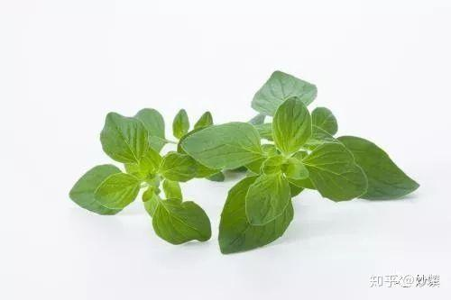
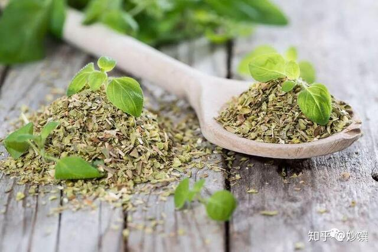

牛至，俗称披萨草，因为做披萨少不了它去调味。从中世纪以来，牛至就深受欧洲人喜爱，做成香袋携带，入菜调味，做成花茶。它是一种很地中海风味的香草（我理解，看见这种抽象描述会想打人，但肯定有懂的人），味道比较浓烈，尤其是干牛至。如果想减轻香草的味道，就用新鲜牛至。

▲ 新鲜牛至，图源自网络。

▲ 干牛至，图源自网络。
气味：气味浓烈，辛辣略苦涩的口感。
回顾：
coffee cat 的早餐：乳酪鲜虾番茄蛋饼
▲ 牛至不仅能烹调肉类，它做在Frittata里也很给力。
应用：做披萨；制作意面酱汁；烹调各种肉类及鱼，去膻；入沙拉；用于做煎蛋omelet和意式蛋饼Frittata。